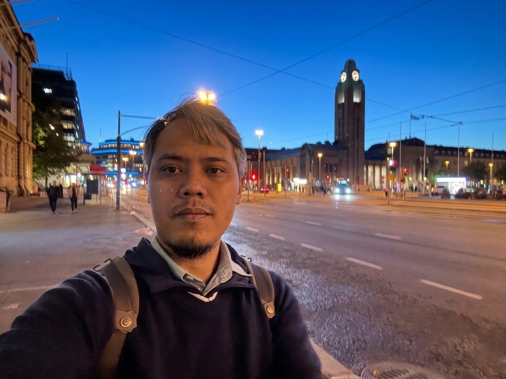

NSNovendra Setyawan, S.T., M.T.
Assistant Professor 2 (Lecture)
Department of Electrical Engineering, University of Muhammadiyah Malang
Ph.D. Candidate, Department of Electro Optics Engineering, National Formosa University, Taiwan
Novendra Setyawan, S.T., M.T. received the B.Eng. degree in Electrical Engineering from the University of Muhammadiyah Malang, Indonesia, in 2015, and the M.Eng. degree in Electrical Engineering from the Institut Teknologi Sepuluh Nopember (ITS), Surabaya, Indonesia, in 2017. He is a Ph.D. candidate in the Department of Electro Optics Engineering, National Formosa University, Taiwan. Since 2018, he has been an Assistant Professor in the Department of Electrical Engineering, University of Muhammadiyah Malang, Indonesia.
Education
- 2023 – NowPh.D. Candidate, Department of Electro Optics Engineering, National Formosa University, Yunlin, Taiwan
- 2015 – 2017Master of Engineering, Department of Electrical Engineering, Institut Teknologi Sepuluh Nopember, Surabaya, Indonesia
- 2010 – 2015Bachelor of Engineering, Department of Electrical Engineering, University of Muhammadiyah Malang, Malang, Indonesia
Work Experience
- 2018 – 2023Assistant Professor 1, Department of Electrical Engineering, University of Muhammadiyah Malang, Malang, Indonesia
- 2023 — NowAssistant Professor 2 (Lecturer), Department of Electrical Engineering, University of Muhammadiyah Malang, Malang, Indonesia
Award
- 2026Best Paper, Muhammad Ridha Agam, Novendra Setyawan, Chi-Chia Sun, Hui-Kai Su, Jun-Wei Hsieh. "UniReflow: Unified One-Step Perception and Generation via Rectified Flow Distillation." The 16th National Conference on Web Intelligence and Application (NCWIA), Taiwan, 2026
- 2024Silver Medal, "FPGA-Based Batik Classification Using Quantization Aware Training of MobileNet and Data-flow." AMD FPGA Design Contest, Taiwan, 2024.
- 2018Best Paper, Novendra Setyawan, Nuralif Mardiyah, Khusnul Hidayat, Zulfatman Has. "Object detection of omnidirectional vision using PSO-neural network for soccer robot." The 5th International Conference on Electrical Engineering, Computer Science and Informatics (EECSI), Indonesia, 2018
Reviewer
- IEEE International Conference on Image Processing (ICIP), 2026
- IEEE Transaction on Multimedia Scopus Q1
- Franklin Open (Elsevier) Scopus Q1
- Information Fusion (Elsevier) Scopus Q1
- Knowledge-Based Systems (Elsevier) Scopus Q1
- Frontiers in Robotics and AI Scopus Q1
- Frontiers in Mechanical Engineering Scopus Q1
Selected Journal Publications
- Novendra Setyawan, Chi-Chia Sun, Mao-Hsiu Hsu, Wen-Kai Kuo, Jing-Ming Guo, Jun-Wei Hsieh. “CoDAT: Collaborative Dual-Attention Transformer With Low-Cost Temporal Modeling for Efficient Edge Action Recognition.” IEEE Internet of Things Journal, 2026. SCI/EI/Scopus Q1
- Novendra Setyawan, Chi-Chia Sun, Mao-Hsiu Hsu, Wen-Kai Kuo, Jun-Wei Hsieh. “FaceLiVTv2: An Improved Hybrid Architecture for Efficient Mobile Face Recognition.” IEEE Transactions on Biometrics, Behavior, and Identity Science, 2026. SCI/EI/Scopus Q1
- Qory Hidayati, Novendra Setyawan, Amrul Faruq, Muhammad Irfan, Nur Kasan, Fitri Yakub. “Localization and Mapping of Autonomous Wheel Mobile Robot Using Google Cartographer.” IAES International Journal of Robotics and Automation (IJRA), 2025. Scopus Q4
- Lailis Syafaah, Novendra Setyawan, Amrul Faruq, Mauridhi Hery Purnomo. “Enhancing Electrical Load Forecasting Accuracy in Poultry Farms: A Hybrid Approach Integrating Fuzzy Signature Particle Swarm Optimization and Neural Network.” IAENG International Journal of Computer Science, 2025. Scopus Q3
- Lailis Syafaah, Amrul Faruq, Novendra Setyawan. “Sick and Dead Chicken Detection System Based on YOLO Algorithm.” Ingénierie des Systèmes d’Information (ISI), 2024. Scopus Q3
- Achmad Komarudin, Novendra Setyawan, Leonardo Kamajaya, Mas Nurul Achmadiah, Zulfatman Zulfatman. “Signature PSO: A Novel Inertia Weight Adjustment Using Fuzzy Signature for LQR Tuning.” Bulletin of Electrical Engineering and Informatics, 2021. Scopus Q3
Selected Conference Publications
- Novendra Setyawan, Mas Nurul Achmadiah, Chi-Chia Sun, Mao-Hsiu Hsu, Jun-Wei Hsieh. “MicroFaceViM: Efficient Face Recognition via Partial State-Space Duality.” Asian Confernce on Computer Vision (ACCV), 2026. EI/Scopus Q2
- Novendra Setyawan, Chi-Chia Sun, Mao-Hsiu Hsu, Wen-Kai Kuo, Jun-Wei Hsieh. “MicroViTV2: Beyond the FLOPs for Edge Energy-Friendly Vision Transformers.” IEEE International Conference on Image Processing (ICIP), 2026. EI/Scopus Q2
- Novendra Setyawan, Jun-Xian Gu, Chi-Chia Sun, Mao-Hsiu Hsu, Wen-Kai Kuo, Jun-Wei Hsieh. “FaceLiVT: Energy Efficient Face Recognition with Linear Vision Transformer for Limited Resource Device.” IEEE Asia Pacific Conference on Circuits and Systems (APCCAS), 2025. EI/Scopus No Q
- Novendra Setyawan, Chi-Chia Sun, Mao-Hsiu Hsu, Wen-Kai Kuo, Jun-Wei Hsieh. “FaceLiVT: Face Recognition Using Linear Vision Transformer with Structural Reparameterization for Mobile Device.” IEEE International Conference on Image Processing (ICIP), 2025. EI/Scopus Q2
- Muhammad Ridha Agam, Novendra Setyawan, Chi-Chia Sun, Hui-Kai Su, Jun-Wei Hsieh. “Classification of Indonesian Language News Documents Using RNN and Transformers.” IEEE International Conference on Consumer Electronics – Taiwan (ICCE-Taiwan), 2025. EI/Scopus No Q
- Novendra Setyawan, Chi-Chia Sun, Mao-Hsiu Hsu, Wen-Kai Kuo, Jun-Wei Hsieh. “MicroViT: A Vision Transformer with Low Complexity Self Attention for Edge Device.” IEEE International Symposium on Circuits and Systems (ISCAS), 2025. EI/Scopus Q3
- Novendra Setyawan, Chi-Chia Sun, Wen-Kai Kuo, Mao-Hsiu Hsu. “FPGA-Based Batik Classification Using Quantization Aware Training of MobileNet and Data-Flow Implementation.” IEEE Asia Pacific Conference on Circuits and Systems (APCCAS), 2024. EI/Scopus No Q
- Novendra Setyawan, Mas Nurul Achmadiah, Chi-Chia Sun, Wen-Kai Kuo. “Multi-Stage Vision Transformer for Batik Classification.” International Electronics Symposium (IES), 2024. EI/Scopus No Q
- Mas Nurul Achmadiah, Novendra Setyawan, Achmad Arif Bryantono, Chi-Chia Sun, Wen-Kai Kuo. “Fast Person Detection Using YOLOX with AI Accelerator for Train Station Safety.” International Electronics Symposium (IES), 2024. EI/Scopus No Q
- Novendra Setyawan, Tri Septiana Nadia Puspita Putri, Mohamad Al Fikih, Nur Kasan. “Comparative Study of CNN and YOLOv3 in Public Health Face Mask Detection.” 8th International Conference on Electrical Engineering, Computer Science and Informatics (EECSI), 2021. EI/Scopus No Q
- Novendra Setyawan, Muhammad Nasar, Nuralif Mardiyah. “Jaya-Neural Network for Server Room Temperature Forecasting Through Sensor Network.” International Electronics Symposium (IES), 2019.
- Novendra Setyawan, Nuralif Mardiyah, Khusnul Hidayat, Zulfatman Has. “Object Detection of Omnidirectional Vision Using PSO-Neural Network for Soccer Robot.” 5th International Conference on Electrical Engineering, Computer Science and Informatics (EECSI), 2018. EI/Scopus No Q
- Novendra Setyawan, Rusdhianto Effendi Abdul Kadir, Ahmad Jazidie. “Adaptive Gaussian Parameter Particle Swarm Optimization and Its Implementation in Mobile Robot Path Planning.” International Seminar on Intelligent Technology and Its Applications (ISITIA), 2017. EI/Scopus No Q
Full list on Google Scholar.
Teaching
I am teaching Artificial Intelligence and Deep Learning at the Department of Electrical Engineering, University of Muhammadiyah Malang.
Research Project
Below you'll find my research and funding. For questions on any specific publication, feel free to contact my office.
2024 – 2027
Vision Transformer Basic Technology Development, Application Generation, and Security Measures
Sub-project 5: Lightweight ViT Design and Application of Target Edge Encoding Enhancement Technology to Open Source Artificial Intelligence Edge Computing Nodes.
Granted by NSTC, Taiwan · Grant No. NSTC113-2221-E-305-018-MY3